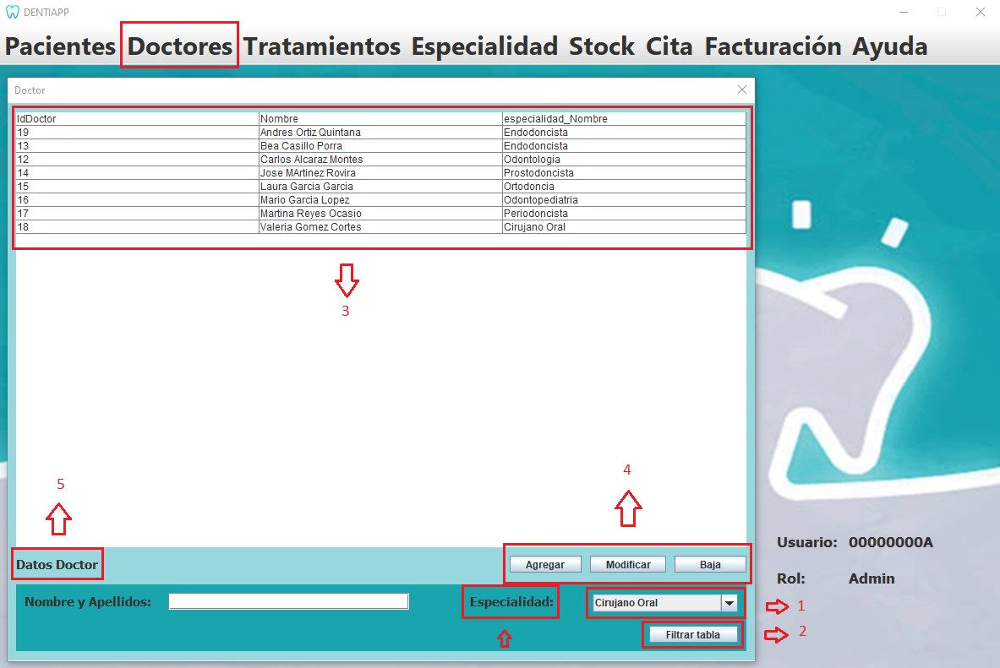

Esta es la página de Gestión de Doctores. A ella tiene acceso el Administrador unicamente, ya que el administrador es el encargador de gestionar los doctores que tenemos en nuestra base de datos.
En esta página, el Administrado podrá ver una tabla con los datos de los doctores y podra dar de alta, modificar y elimar doctores.
A continuación, se mostrará el diseño de nuestra interfaz, señalizando y explicando la funcionalidad de los distintos
elementos destacables:

Listado de elementos:
-
Tabla:Está conectada a la base de datos "Doctores", y nos permite visualizar el
contenido de este. Donde tendremos los datos personales de los doctores junto a su especialidad. El administrador es el unico que tendrá acceso a todos los datos.
Solo el administrador puede modificar datos personales de los doctores.
-
Botón "Agregar, modificar, dar de baja":Estos botones realizan su accion correspondiente a los doctores, la cual esta disponible solamente si entramos
como admnistrador que podrá tambien darle una especilidad.
-
Botón "Filtrar Tabla":El administrdor es el unico que puede filtrar a los doctes para localizar a uno en concreto.
-
Cuadro de texto "Datos Doctor":En él se mostrará todos los datos de los doctores junto a su especialidad.